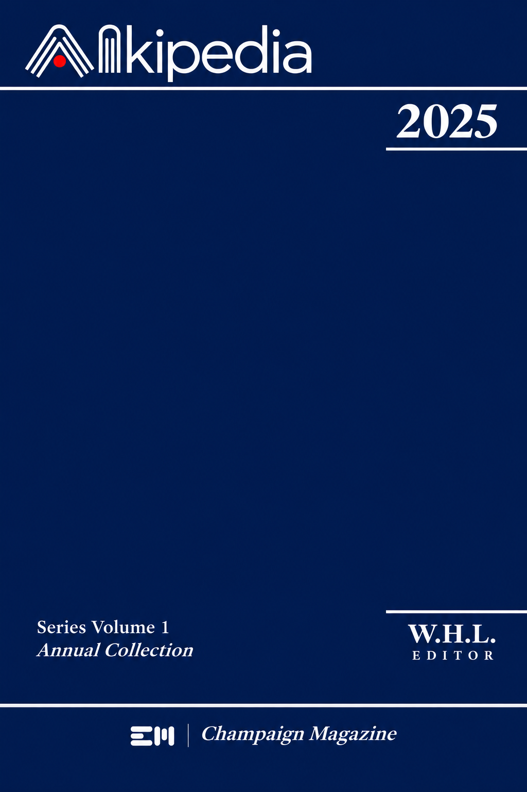

Aikipedia · Series Volume 1
Aikipedia 2025: Annual Collection
Edited by W.H.L. · Champaign Magazine · First published November 2026
The sixteen Aikipedia publications of 2025 as corrected reference texts and as a historical archive, with six entries commissioned for the collection. This online edition carries the full-post transcriptions of all sixteen original posts.
Search the collectionPDF edition
Contents
Opening
Using the Collection
- How to Use This Collection
- Collection at a Glance
- The 2025 Publications: A Timeline
- Alphabetical Table of Contents
- Thematic Table of Contents
The Reference Collection
- Part I. Models and Architectures
- Part II. Training, Learning and Data
- Part III. Reasoning and Inference
- Part IV. Alignment, Safety and Interpretability
- Part V. Agents, Tools and Applications
- Part VI. Embodied AI, Industry and Society
The Historical Record
- Historical Lexicon Archive
- 2025-10-29 — On-Policy Distillation (post 13892)
- 2025-10-30 — Chain-of-Thought Prompting (post 13946)
- 2025-10-31 — Constitutional AI (post 13958)
- 2025-11-03 — Mixture of Depths (post 13982)
- 2025-11-05 — Mixture of Experts (post 13998)
- 2025-11-06 — Continuous Autoregressive Language Models (post 14021)
- 2025-11-09 — Prefill–Decode Disaggregation (post 14033)
- 2025-11-29 — Generative User Interfaces (post 14146)
- 2025-11-30 — New AI Lexicon 2025 — Launch Edition (post 14155)
- 2025-12-01 — New AI Lexicon 2025 (2) (post 14191)
- 2025-12-02 — New AI Lexicon 2025 (3) (post 14221)
- 2025-12-03 — New AI Lexicon 2025 (4) (post 14233)
- 2025-12-05 — New AI Lexicon 2025 (5) (post 14257)
- 2025-12-08 — New AI Lexicon 2025 (6) (post 14313) — excluded from the canonical text (disposition X)
- 2025-12-12 — New AI Lexicon 2025 (7) (post 14328)
- 2025-12-14 — Circuit Sparsity (post 14343)
Sources and Editorial Record
- References
- Corrections and Editorial Notes
- Editorial Method
- AI Disclosure
- Appendix A. AES v1.0 — Aikipedia Annual Collection Editorial and Format Standard
- Appendix B. AES-ID v1.0 — Identifier Scheme, Permanence Rules and Register Fields
- Appendix C. Provenance Policy AP-2025-01
- Appendix D. Digest of Editorial Rulings, Aikipedia 2025
- Appendix E. Conflicts of Interest and Recusals
- Appendix F. Related Editorial Material
- Appendix G. Provenance Register and Record Histories
- Alphabetical Index of Terms
